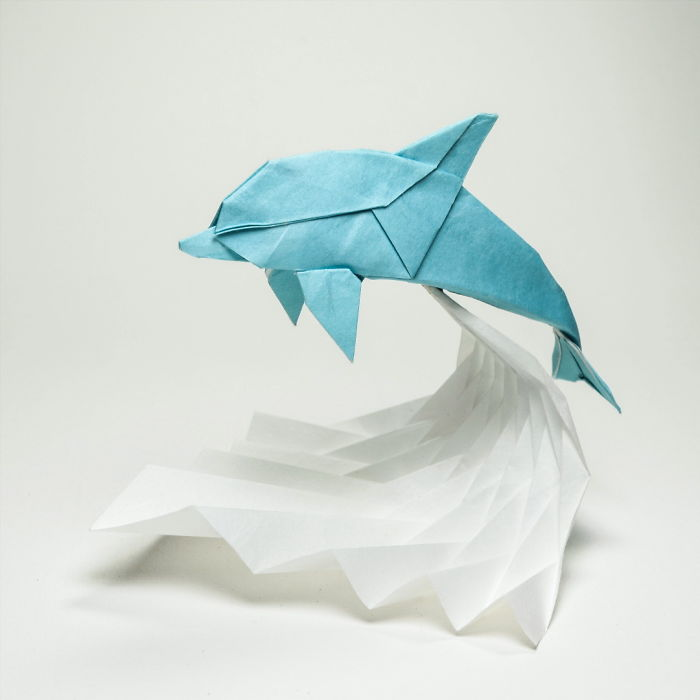
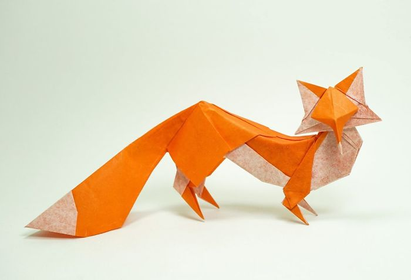
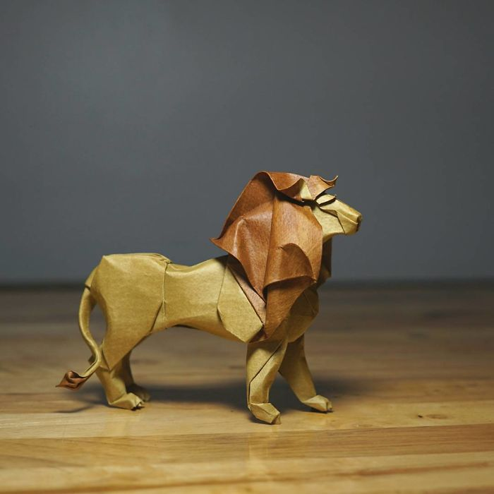
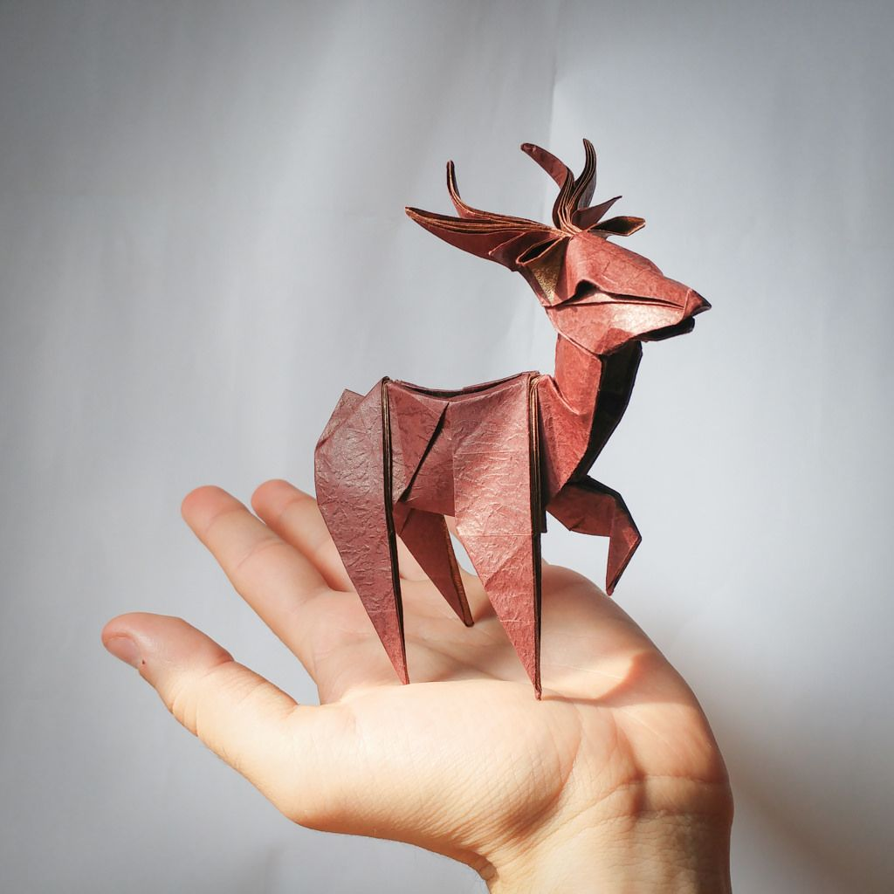
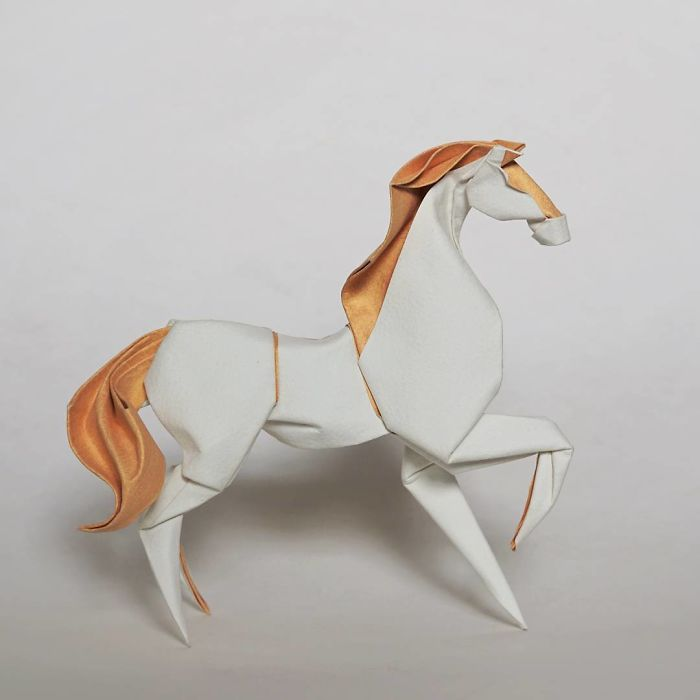
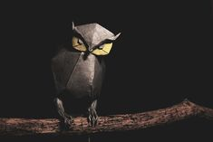

Cute origami Designs for you!
about me!
follow me!
Starting with the origami animals!

Facts about my favourite animal-dolphins ^_^
- Dolphins have 2 stomachs(They can a lot of food!)
- Dolphins can live for about 50 years!

Facts about foxes ┬┬﹏┬┬
- Foxes can make upto 40 sounds.(Damn,thats a lot!)
- A female fox is called "Vixen".

Facts about lions ༼ つ ◕_◕ ༽つ
- A Lion's roar can be heard 8 kms away!
- Female lions are the main hunters.(You go,girl!)

Facts about deers ❁´◡`❁
- Deers are a part of the Cervidae family that consists of other animals such as moose,reindeer and elk.
- Deers can run upto 30 miles/hour.(That is legit fast!)

Facts about horses :-P
- Horses can sleep both lying down and standing up(I wish I could do that)
- Horses have been domesticated for over 5000 years!

Facts about owls ⊙_⊙
- Owls can rotate their head 270⁰.
- The eyes of an owl are not true “eyeballs.” Their tube-shaped eyes are completely immobile, providing binocular vision which fully focuses on their prey and boosts depth perception.(My life was a lie)
So guys! Thanks for viewing my Origami Website. Make sure to like this Project and see you all soon. Till then, keep wearing your masks when you step out of your homes and keep Hydrating Yourself cuz summer is coming!